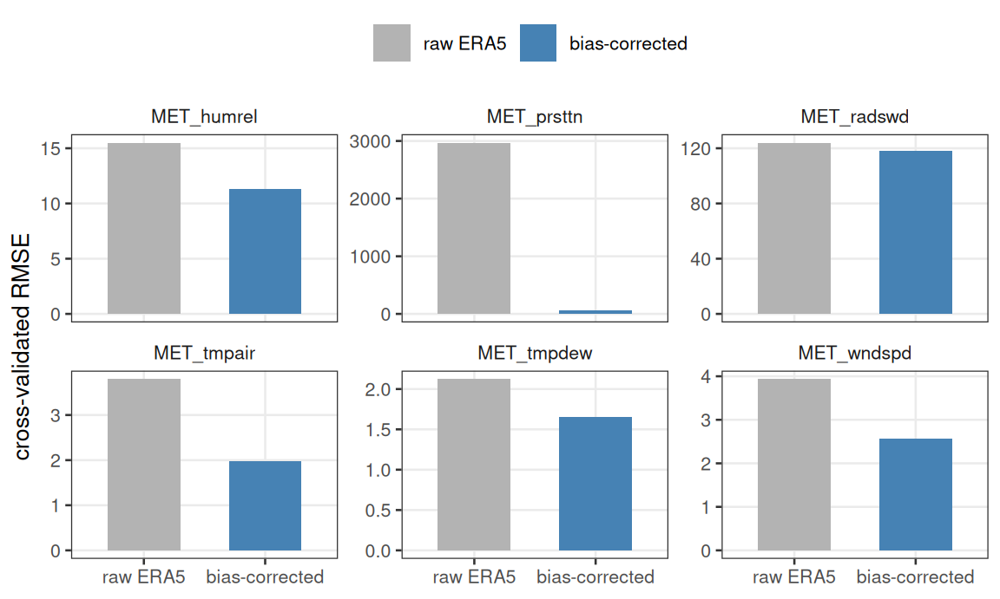
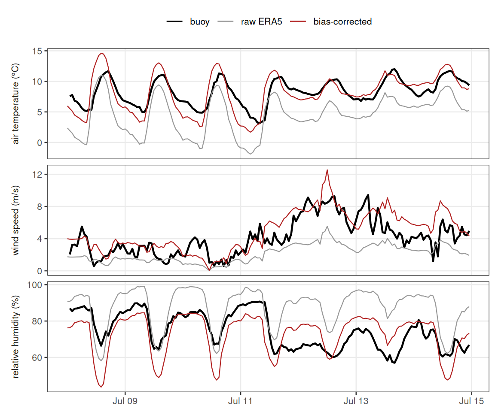
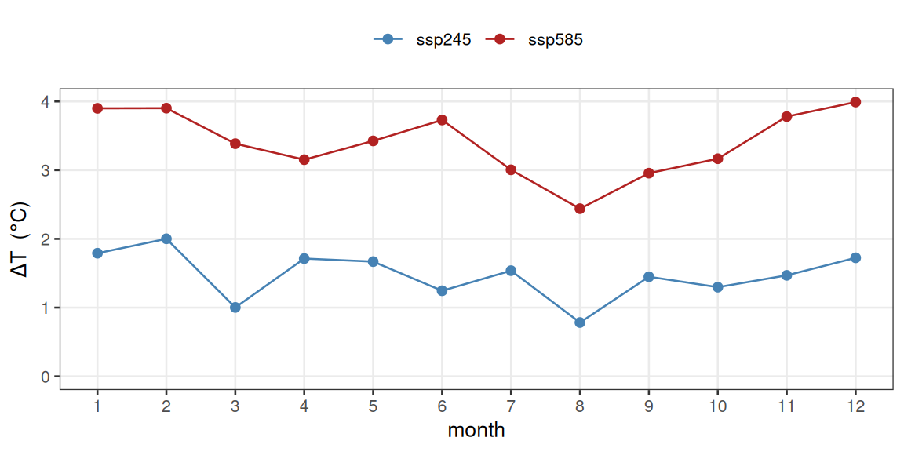
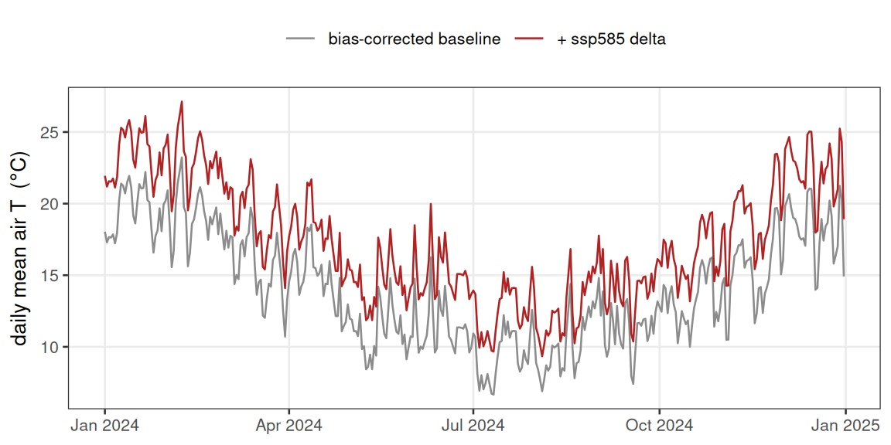
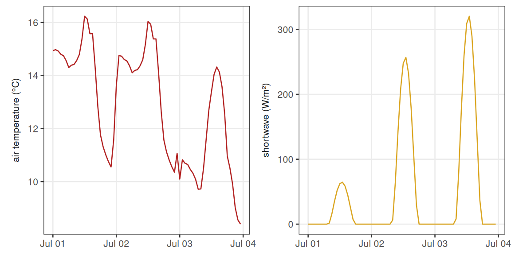
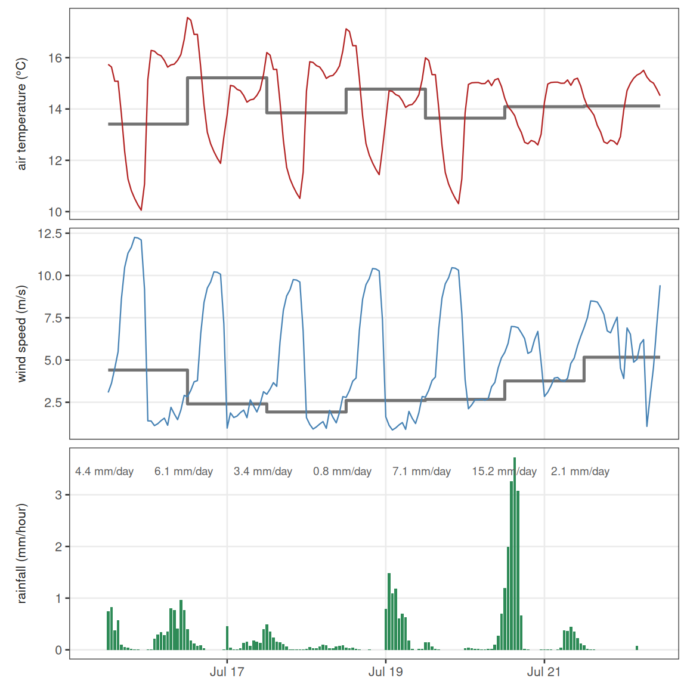
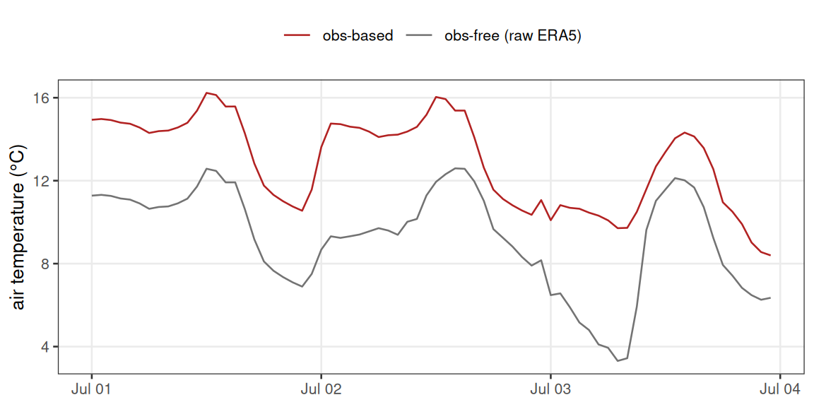
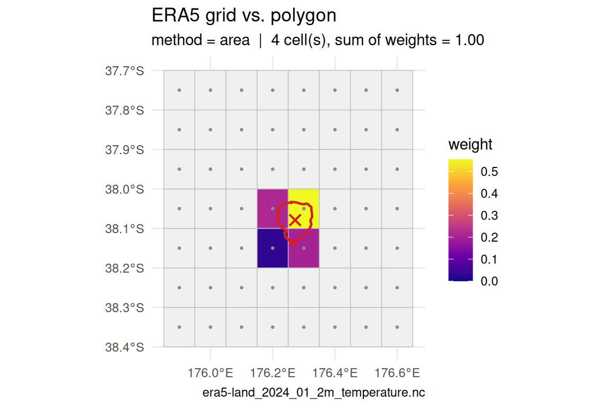

Driving a sub-daily lake model under a climate scenario needs three things done in the right order:
- bias-correct the reanalysis against local observations,
- apply the climate model’s delta-change signal to the corrected baseline (never to the raw reanalysis, and never to the delta itself),
- temporally disaggregate the daily projection back to hourly.
metscale covers steps 1 and 3 directly; step 2 is a few
lines of arithmetic shown below. See ?scenario_workflow for
why the correction must come before the delta.
library(metscale)
library(ggplot2)
theme_set(
theme_bw(base_size = 10) +
theme(panel.grid.minor = element_blank(),
legend.position = "top",
legend.title = element_blank(),
strip.background = element_blank(),
strip.placement = "outside")
)
ex <- system.file("extdata", package = "metscale")
tz <- "Etc/GMT-12" # fixed NZST (UTC+12)
lon <- 176.2717
lat <- -38.0790
elev <- 279 # Lake Rotorua surface, mThe bundled example data is a deliberately small slice: a three-year
hourly ERA5-Land extract for Lake Rotorua (2023–2025, chosen to overlap
the buoy record), the matching buoy meteorology, and the NIWA CCAM
downscaling of one CMIP6 model (NorESM2-MM) cropped to a
3×3 grid window and to 2005–2014 (historical) plus 2090–2099
(ssp245, ssp585). A production run would use a
multi-decade reanalysis record and 20-year climate windows; the steps
are identical.
The hourly ERA5-Land slice was produced by
extract_era5_hourly_met() reading monthly ERA5-Land files.
The appendix (Checking the extraction grid) shows the one-line
plot_extract_grid() check — that the lake outline sits on
the grid cells you expect — worth running before any extraction.
1. Bias-correct hourly ERA5 against the buoy
The buoy anemometer sits at 2 m; wind_height = 2
rescales it to the 10 m convention (neutral log profile) so it is
comparable with ERA5 before the bias correction is fitted.
obs <- prepare_obs_met(file.path(ex, "rotorua_buoy_met_aeme_hr.csv.gz"),
resample = "hour", tz = tz, station = "rotorua_buoy",
wind_height = 2, verbose = FALSE)
era5 <- read.csv(file.path(ex, "rotorua_era5_hourly_met.csv.gz"),
check.names = FALSE)
era5$Date <- as.POSIXct(era5$Date, tz = tz, format = "%Y-%m-%d %H:%M:%S")
attr(era5, "tz") <- tz; attr(era5, "lat") <- lat; attr(era5, "lon") <- lon
## "scale" (per-month offset, day-of-year loess-smoothed) is the right choice
## for a baseline that will be projected: a fitted CDF (eqm/qdm) extrapolates
## poorly outside its training range. Rainfall is left uncorrected here --- a
## lake buoy under-catches rain, so its totals are not a good target; ERA5's
## own precipitation is carried through.
fit_vars <- c("MET_tmpair", "MET_tmpdew", "MET_wndspd", "MET_radswd",
"MET_humrel", "MET_prsttn")
bc <- fit_met_bias_correction(era5, obs, vars = fit_vars, method = "scale",
by = "doy-loess", verbose = FALSE)
bc$skill[bc$skill$stage %in% c("cv_raw", "cv_corrected"), ]
#> variable stage n bias mae rmse r kge
#> 3 MET_tmpair cv_raw 13040 -3.2312 3.3591 3.7952 0.9274 0.6636
#> 4 MET_tmpair cv_corrected 13040 0.0726 1.5546 1.9684 0.9203 0.7845
#> 7 MET_tmpdew cv_raw 12877 -1.3088 1.6958 2.1225 0.9204 0.8381
#> 8 MET_tmpdew cv_corrected 12877 0.0279 1.2088 1.6592 0.9245 0.9216
#> 11 MET_wndspd cv_raw 13030 -3.2290 3.3061 3.9336 0.5865 0.0740
#> 12 MET_wndspd cv_corrected 13030 0.0348 2.0311 2.5646 0.5903 0.5832
#> 15 MET_radswd cv_raw 11221 11.2662 72.3798 124.0187 0.8788 0.8652
#> 16 MET_radswd cv_corrected 11221 -4.2007 68.9717 118.1909 0.8851 0.8769
#> 19 MET_humrel cv_raw 12877 10.6182 13.3239 15.5025 0.7248 0.4139
#> 20 MET_humrel cv_corrected 12877 -0.2193 8.8087 11.2990 0.7066 0.4532
#> 23 MET_prsttn cv_raw 13040 -2968.9928 2968.9928 2969.8660 0.9962 0.9659
#> 24 MET_prsttn cv_corrected 13040 -3.3971 52.5505 68.4245 0.9965 0.9885
sk <- bc$skill
stg <- if (any(sk$stage == "cv_raw")) c("cv_raw", "cv_corrected") else c("raw", "corrected")
sk <- sk[sk$stage %in% stg, ]
sk$kind <- factor(ifelse(grepl("raw", sk$stage), "raw ERA5", "bias-corrected"),
c("raw ERA5", "bias-corrected"))
ggplot(sk, aes(kind, rmse, fill = kind)) +
geom_col(width = 0.6) +
facet_wrap(~ variable, scales = "free_y") +
scale_fill_manual(values = c("raw ERA5" = "grey70",
"bias-corrected" = "steelblue")) +
labs(x = NULL, y = "cross-validated RMSE")
Figure 1. Leave-one-year-out cross-validated RMSE for each fitted variable, in that variable’s own units (free y-axis per panel). Because every year is scored by a model that never saw it, the fall from raw ERA5 to bias-corrected is out-of-sample skill, not in-sample fit. Every variable improves; station pressure improves most, for the reason noted below the figure.
The large station-pressure correction is not a unit
mismatch — both series are in pascals. ERA5-Land reports surface
pressure at its grid-cell orography height, which around Lake Rotorua
sits roughly 250 m above the 279 m lake surface. That elevation gap
appears as a near-constant offset of about -3 kPa (standard deviation
only ~70 Pa, correlation 0.996), which the monthly scale
offset removes almost exactly.
Apply the fit to the whole record and expand the dependent variables — this corrected hourly series is also the donor for disaggregation in step 3.
era5_corr <- apply_met_bias_correction(era5, bc, expand = TRUE,
lat = lat, lon = lon, elev = elev,
tz = tz, verbose = FALSE)One winter week shows the correction at work on the hourly series.
w0 <- as.POSIXct("2024-07-08", tz = tz)
w1 <- as.POSIXct("2024-07-15", tz = tz)
win <- function(d) d[d$Date >= w0 & d$Date < w1, ]
vs <- c(MET_tmpair = "air temperature (°C)",
MET_wndspd = "wind speed (m/s)",
MET_humrel = "relative humidity (%)")
mk <- function(d, src) {
d <- win(d)
data.frame(Date = rep(d$Date, length(vs)),
value = unlist(d[names(vs)], use.names = FALSE),
variable = factor(rep(unname(vs), each = nrow(d)), unname(vs)),
source = src)
}
wk <- rbind(mk(obs, "buoy"), mk(era5, "raw ERA5"), mk(era5_corr, "bias-corrected"))
wk$source <- factor(wk$source, c("buoy", "raw ERA5", "bias-corrected"))
ggplot(wk, aes(Date, value, colour = source, linewidth = source)) +
geom_line() +
facet_wrap(~ variable, ncol = 1, scales = "free_y", strip.position = "left") +
scale_colour_manual(values = c(buoy = "black", "raw ERA5" = "grey60",
"bias-corrected" = "firebrick")) +
scale_linewidth_manual(values = c(buoy = 0.8, "raw ERA5" = 0.4,
"bias-corrected" = 0.4), guide = "none") +
labs(x = NULL, y = NULL)
Figure 2. Lake Rotorua, 8–15 July 2024: hourly buoy observations (black) against ERA5-Land before (grey) and after (red) the scale correction. The correction lifts the persistently cold ERA5 air temperature onto the buoy, scales up the under-forecast wind, and pulls down the moist bias in relative humidity, while leaving the sub-daily shape of each series intact.
2. Bias-corrected daily baseline
baseline <- bias_correct_daily_baseline(era5, bc, lat = lat, lon = lon,
elev = elev, tz = tz, verbose = FALSE)
## keep only fully-populated days
ok <- stats::complete.cases(baseline[c("MET_radswd", "MET_tmpair", "MET_pprain",
"MET_wndspd", "MET_humrel")])
baseline <- baseline[ok, ]
range(baseline$Date)
#> [1] "2023-12-01" "2025-09-01"3. CMIP6 delta-change on the corrected baseline
Read the model series at the lake with
extract_cmip6_point() — it decodes the 365-day model
calendar, samples bilinearly, and returns AEME MET_* names
and units.
cmip <- extract_cmip6_point(file.path(ex, "rotorua_cmip6"),
lon = lon, lat = lat,
vars = c("MET_tmpair", "MET_pprain", "MET_wndspd",
"MET_radswd", "MET_humrel"),
verbose = FALSE)
cmip_by <- split(cmip, cmip$experiment)
vapply(cmip_by, nrow, integer(1))
#> historical ssp245 ssp585
#> 3650 3650 3650Change factors are formed per calendar month, future window vs model historical: additive for temperature and shortwave (degC, W m-2), multiplicative for the bounded/skewed fields (rainfall, wind, humidity).
REF_YEARS <- 2005:2014
FUT_YEARS <- 2090:2099
KIND <- c(MET_tmpair = "add", MET_radswd = "add",
MET_pprain = "ratio", MET_wndspd = "ratio", MET_humrel = "ratio")
monthly_delta <- function(fut, hist) {
mh <- as.integer(format(hist$Date, "%m")); hy <- as.integer(format(hist$Date, "%Y"))
mf <- as.integer(format(fut$Date, "%m")); fy <- as.integer(format(fut$Date, "%Y"))
kh <- hy %in% REF_YEARS; kf <- fy %in% FUT_YEARS
lapply(names(KIND), function(v) {
a <- tapply(hist[[v]][kh], mh[kh], mean, na.rm = TRUE)
b <- tapply(fut[[v]][kf], mf[kf], mean, na.rm = TRUE)
d <- if (KIND[[v]] == "ratio") b / a else b - a
stats::setNames(as.numeric(d[as.character(1:12)]), 1:12)
}) |> stats::setNames(names(KIND))
}
apply_delta <- function(base, delta) {
mo <- as.integer(format(base$Date, "%m"))
out <- base
for (v in names(delta)) {
f <- delta[[v]][mo]
out[[v]] <- if (KIND[[v]] == "ratio") out[[v]] * f else out[[v]] + f
}
out$MET_humrel <- pmin(pmax(out$MET_humrel, 0), 100)
for (v in c("MET_radswd", "MET_wndspd", "MET_pprain"))
out[[v]][out[[v]] < 0] <- 0
## regenerate dependents; station pressure carries no CMIP delta
expand_met(out[, c("Date", "MET_radswd", "MET_tmpair", "MET_pprain",
"MET_humrel", "MET_wndspd", "MET_prsttn")],
lat = lat, lon = lon, elev = elev, tz = tz)
}
deltas <- list(ssp245 = monthly_delta(cmip_by$ssp245, cmip_by$historical),
ssp585 = monthly_delta(cmip_by$ssp585, cmip_by$historical))
sapply(deltas, function(d) round(mean(d$MET_tmpair), 2)) # annual-mean warming, degC
#> ssp245 ssp585
#> 1.47 3.40
dT <- data.frame(
month = rep(1:12, 2),
delta = c(deltas$ssp245$MET_tmpair, deltas$ssp585$MET_tmpair),
scenario = rep(c("ssp245", "ssp585"), each = 12))
ggplot(dT, aes(month, delta, colour = scenario)) +
geom_line() +
geom_point(size = 1.8) +
scale_x_continuous(breaks = 1:12) +
scale_colour_manual(values = c(ssp245 = "steelblue", ssp585 = "firebrick")) +
expand_limits(y = 0) +
labs(x = "month", y = expression(Delta * "T (" * degree * "C)"))
Figure 3. Monthly-mean air-temperature change factors
added in step 2: 2090–2099 minus the 2005–2014 model baseline, one line
per scenario. ssp585 warms more than ssp245 in
every month. These twelve numbers are what apply_delta()
adds to the corresponding months of the corrected daily baseline.
proj <- lapply(deltas, apply_delta, base = baseline)
yr <- format(baseline$Date, "%Y") == "2024"
pf <- rbind(
data.frame(Date = baseline$Date[yr], tmpair = baseline$MET_tmpair[yr],
series = "bias-corrected baseline"),
data.frame(Date = proj$ssp585$Date[yr], tmpair = proj$ssp585$MET_tmpair[yr],
series = "+ ssp585 delta"))
pf$series <- factor(pf$series, c("bias-corrected baseline", "+ ssp585 delta"))
ggplot(pf, aes(Date, tmpair, colour = series)) +
geom_line() +
scale_colour_manual(values = c("bias-corrected baseline" = "grey55",
"+ ssp585 delta" = "firebrick")) +
labs(x = NULL, y = expression("daily mean air T (" * degree * "C)"))
Figure 4. Effect of the delta-change step over one
year: the bias-corrected daily-mean air temperature for 2024 (grey) and
the same days after adding the ssp585 2090–2099 monthly
signal (red). The offset varies by month, so the projected series is
warped rather than simply shifted.
4. Disaggregate the projection to hourly
disaggregate_met_to_hourly() borrows the within-day
shape of the corrected ERA5 record (method of fragments) and rebuilds
shortwave from solar geometry. Daily means and rainfall totals are
conserved.
slice <- proj$ssp585[format(proj$ssp585$Date, "%Y-%m") == "2024-07", ]
hourly <- disaggregate_met_to_hourly(slice, donor = era5_corr,
method = "fragments", swr = "clearsky",
lat = lat, lon = lon, elev = elev, tz = tz,
seed = 42, expand = TRUE, verbose = FALSE)
nrow(hourly)
#> [1] 744
d3 <- hourly[format(hourly$Date, "%Y-%m-%d") <= "2024-07-03", ]
df <- rbind(
data.frame(Date = d3$Date, value = d3$MET_tmpair, panel = "air temperature (°C)"),
data.frame(Date = d3$Date, value = d3$MET_radswd, panel = "shortwave (W/m²)"))
df$panel <- factor(df$panel, unique(df$panel))
ggplot(df, aes(Date, value, colour = panel)) +
geom_line() +
facet_wrap(~ panel, scales = "free_y", strip.position = "left") +
scale_colour_manual(values = c("firebrick", "goldenrod"), guide = "none") +
labs(x = NULL, y = NULL)
Figure 5. First three days (1–3 July 2024) of the
disaggregated hourly ssp585 projection. Air temperature
carries the diurnal shape of the analogue donor day; shortwave is not
borrowed but reconstructed from clear-sky solar geometry, so it starts
and ends each day at zero.
Zooming out to a full week shows what disaggregation does to each field and what it leaves alone.
## pick the wettest 7-day window of the month so the rain panel is not empty
roll7 <- sapply(seq_len(nrow(slice) - 6),
function(i) sum(slice$MET_pprain[i:(i + 6)]))
w0d <- slice$Date[which.max(roll7)]
h7 <- hourly[as.Date(hourly$Date) >= w0d & as.Date(hourly$Date) < w0d + 7, ]
day_of <- function(v) slice[[v]][match(as.Date(h7$Date), as.Date(slice$Date))]
lab <- c(MET_tmpair = "air temperature (°C)",
MET_wndspd = "wind speed (m/s)",
MET_pprain = "rainfall (mm/hour)")
hourly_df <- rbind(
data.frame(Date = h7$Date, value = h7$MET_tmpair, panel = lab[["MET_tmpair"]]),
data.frame(Date = h7$Date, value = h7$MET_wndspd, panel = lab[["MET_wndspd"]]),
data.frame(Date = h7$Date, value = h7$MET_pprain, panel = lab[["MET_pprain"]]))
daily_df <- rbind(
data.frame(Date = h7$Date, value = day_of("MET_tmpair"), panel = lab[["MET_tmpair"]]),
data.frame(Date = h7$Date, value = day_of("MET_wndspd"), panel = lab[["MET_wndspd"]]))
hourly_df$panel <- factor(hourly_df$panel, lab)
daily_df$panel <- factor(daily_df$panel, lab)
## per-day rain totals, placed near the top of the rainfall panel
dd <- unique(as.Date(h7$Date))
tot <- slice$MET_pprain[match(dd, as.Date(slice$Date))]
rain_lab <- data.frame(
Date = as.POSIXct(paste(dd, "02:00:00"), tz = tz),
value = max(h7$MET_pprain, na.rm = TRUE) * 0.95,
panel = factor(lab[["MET_pprain"]], lab),
text = sprintf("%.1f mm/day", tot))
rain_lab <- rain_lab[tot > 0.05, ]
ggplot(hourly_df, aes(Date, value)) +
geom_step(data = daily_df, colour = "grey45", linewidth = 0.9,
direction = "hv") +
geom_line(data = subset(hourly_df, panel != lab[["MET_pprain"]]),
aes(colour = panel), linewidth = 0.4) +
geom_col(data = subset(hourly_df, panel == lab[["MET_pprain"]]),
fill = "seagreen", width = 3000) +
geom_text(data = rain_lab, aes(label = text), size = 2.5, hjust = 0,
colour = "grey35", vjust = 1) +
facet_wrap(~ panel, ncol = 1, scales = "free_y", strip.position = "left") +
scale_x_datetime(expand = ggplot2::expansion(mult = c(0.01, 0.03))) +
scale_colour_manual(values = c("firebrick", "steelblue"), guide = "none") +
labs(x = NULL, y = NULL)
Figure 6. Wettest seven-day window of the projected July 2024 month: the daily projection (grey step) and the hourly series disaggregated from it (colour). Hourly air temperature and wind vary about the daily mean; hourly rainfall is redistributed within each day while that day’s total (labelled, mm/day) is left unchanged.
Conservation check — the hourly series re-aggregated to daily reproduces the projected daily input:
back <- met_to_daily(hourly, tz = tz, min_frac = 1)
m <- match(as.Date(back$Date), as.Date(slice$Date))
data.frame(
variable = c("MET_tmpair", "MET_humrel", "MET_pprain"),
max_abs_daily_error = sapply(c("MET_tmpair", "MET_humrel", "MET_pprain"),
function(v) max(abs(back[[v]] - slice[[v]][m])))
)
#> variable max_abs_daily_error
#> MET_tmpair MET_tmpair 0.0004166667
#> MET_humrel MET_humrel 0.0004166667
#> MET_pprain MET_pprain 0.0030000000Without local observations
Only step 1 needs observations. The delta-change (step 2) touches
nothing but the climate model runs, and the disaggregator (step 3) only
needs an hourly donor at the location for the within-day shape
— raw ERA5-Land is exactly that. So with no buoy you can still run the
pipeline: use raw ERA5 aggregated to daily as the baseline, apply the
same deltas, and disaggregate with raw ERA5 as the
donor.
baseline_raw <- met_to_daily(era5, tz = tz)
ok <- stats::complete.cases(baseline_raw[c("MET_radswd", "MET_tmpair", "MET_pprain",
"MET_wndspd", "MET_humrel")])
baseline_raw <- baseline_raw[ok, ]
proj_raw <- lapply(deltas, apply_delta, base = baseline_raw)
slice_raw <- proj_raw$ssp585[format(proj_raw$ssp585$Date, "%Y-%m") == "2024-07", ]
hourly_raw <- disaggregate_met_to_hourly(slice_raw, donor = era5,
method = "fragments", swr = "clearsky",
lat = lat, lon = lon, elev = elev, tz = tz,
seed = 42, expand = TRUE, verbose = FALSE)The obs-free run is missing only the step-1 correction, so the difference between the two hourly series is essentially the ERA5-Land local bias — here the roughly 3 °C winter cold bias in air temperature seen in Figure 1.
cmp <- rbind(
data.frame(Date = hourly$Date, value = hourly$MET_tmpair,
forcing = "obs-based"),
data.frame(Date = hourly_raw$Date, value = hourly_raw$MET_tmpair,
forcing = "obs-free (raw ERA5)"))
cmp <- cmp[format(cmp$Date, "%Y-%m-%d") <= "2024-07-03", ]
ggplot(cmp, aes(Date, value, colour = forcing)) +
geom_line() +
scale_colour_manual(values = c("obs-based" = "firebrick",
"obs-free (raw ERA5)" = "grey45")) +
labs(x = NULL, y = "air temperature (°C)")
Figure 7. The July 2024 ssp585 projection
disaggregated to hourly two ways: with the buoy bias correction (red, as
in Figure 5) and straight from raw ERA5-Land with no observations
(grey). Delta-change and disaggregation are identical between the two;
the near-constant gap is the ERA5-Land air-temperature bias that step 1
would remove.
A middle option, when you have observations somewhere useful but not at the site itself — a nearby land station, a gap-filled station product — is to fit step 1 against that series instead of an on-site sensor; the code is unchanged.
Caveats
Both the local correction and the delta-change assume
stationarity — a transfer function fitted on a few
years of observations is asserted to hold under a future climate. Use a
long reanalysis record and 20-year climate windows, prefer
method = "scale" over quantile mapping for the projected
baseline, and treat the scenario spread (here ssp245 vs
ssp585) as the lower bound on uncertainty. See
?scenario_workflow. For projections aimed at storms,
droughts or heatwaves rather than the mean climate, see
vignette("climate-extremes").
Why delta-change and not the model output directly
Steps 2–3 warp an observation-anchored baseline with a monthly change signal rather than driving the lake model with the CMIP6 series itself. A climate model is reliable for the change between two of its own climates, not for the absolute meteorology at a point:
- Raw model output is biased in absolute terms — mean offset, a distorted seasonal cycle, drizzle-heavy rainfall, the wrong wind climatology. A sub-daily lake model responds to absolute forcing levels, so those errors would land straight in stratification, ice and evaporation. Differencing two model climates cancels most of the shared bias and keeps only the part worth trusting.
- The corrected baseline carries real weather — genuine day-to-day persistence, event structure, inter-variable covariance and a real diurnal cycle, all on actual calendar dates. The future model window is a different draw of internal variability on a 365-day calendar that matches no real sequence. Warping the baseline shifts its statistics while keeping a physically consistent series.
- Resolution — the lake model needs hourly forcing; the model series here is daily on a coarse grid with no credible sub-daily information. Step 4 borrows the within-day shape from the corrected reanalysis instead of inventing it.
-
Order of operations — the reanalysis-to-observation
correction is an absolute-level adjustment, the delta a
difference or ratio. Adding a level correction onto a change
factor is undefined: correct the baseline first, shift second
(
?scenario_workflow).
Extremes and storm events
Delta-change rescales the observed sequence — every projected day is a real past day plus that month’s mean shift, or times its ratio. It cannot move a storm onto a different date, change how many wet or calm days a month holds, or alter day-to-day variance beyond the single multiplicative factor on rainfall and wind. The projected return period of a given daily rainfall or wind total is close to the observed one, only nudged; and the step-4 disaggregator conserves each daily total while borrowing an observed within-day profile, so it does not sharpen sub-daily peaks either.
If extremes are the research question — flood-driving rainfall, storm
mixing, heatwave stratification — the monthly-mean delta is too blunt.
vignette("climate-extremes") works through the alternatives
with the same bundled data: per-quantile change factors, driving from
bias-corrected daily model output, and single-event storyline
perturbation, plus how to diagnose the resulting forcing and feed it to
a lake model.
Appendix — checking the extraction grid
The hourly ERA5-Land series bias-corrected in step 1
(rotorua_era5_hourly_met.csv.gz) was pulled from monthly
ERA5-Land files with extract_era5_hourly_met() — for a
lake, its wrapper extract_era5_lake_met(), which averages
every grid cell the outline overlaps. Before running that it is worth a
look at which cells the outline actually lands on: a shapefile
in the wrong projection, a longitude on the wrong side of the
antimeridian, or a lake smaller than one 0.1° cell all show up instantly
on a map and silently otherwise.
plot_extract_grid() reads the same files the extractor
would, draws the point or polygon against the grid, and shades the cells
the chosen method would sample — one cell for
"nearest", up to four for "bilinear", every
overlapping cell for "area" / "area_mean",
each weighted by its share of the intersection. Cells masked out by
ERA5-Land (sea, or the lake pixels themselves) are outlined in dashed
blue and dropped, their weight spread over the rest.
lake <- readRDS(file.path(ex, "rotorua_lake_shape.rds"))
plot_extract_grid(grid_dir, geom = lake, method = "area")
Figure 8. The Lake Rotorua outline (red, centroid
crossed) on the ERA5-Land 0.1° grid. method = "area"
samples the four cells the polygon overlaps and weights each by its
share of the intersection (legend) — so the extracted lake series is
that area-weighted average. Grey dots are cell centres. Here the outline
is correctly placed and spans a sensible 2×2 block; a projection or
coordinate mistake would put it somewhere else entirely.
plot_extract_grid() returns a ggplot, so it
takes further + layers, and it carries the drawn cells as
an sf on attr(., "grid") (columns
ix, iy, weight,
selected, land) — hand that to
mapview or tmap for an interactive check
against a basemap without either becoming a package dependency. Pass
engine = "base" for a dependency-free
sf::plot() version.